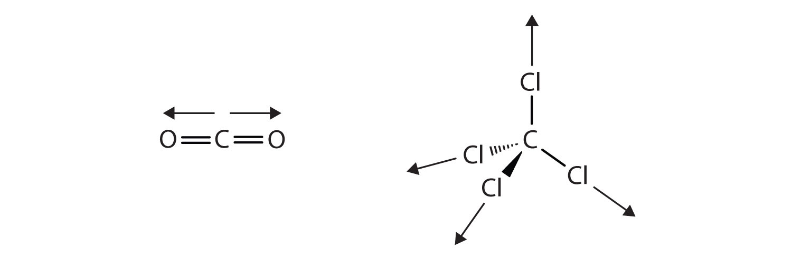
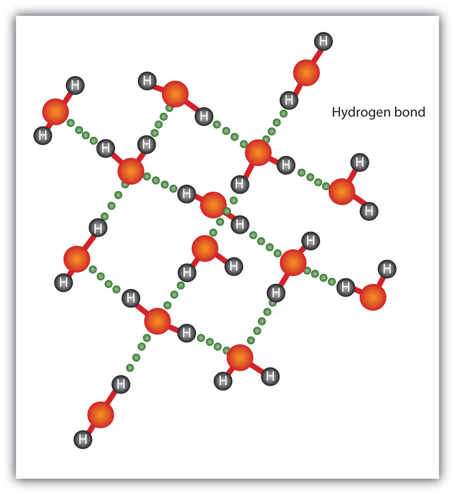

A phaseA form of matter that has the same physical properties throughout. is a certain form of matter that includes a specific set of physical properties. That is, the atoms, the molecules, or the ions that make up the phase do so in a consistent manner throughout the phase. As mentioned in Chapter 1 "Chemistry, Matter, and Measurement", science recognizes three stable phases: the solid phase, in which individual particles can be thought of as in contact and held in place; the liquid phase, in which individual particles are in contact but moving with respect to each other; and the gas phase, in which individual particles are separated from each other by relatively large distances. Not all substances will readily exhibit all phases. For example, carbon dioxide does not exhibit a liquid phase unless the pressure is greater than about six times normal atmospheric pressure. Other substances, especially complex organic molecules, may decompose at higher temperatures, rather than becoming a liquid or a gas.
For many substances, there are different arrangements the particles can take in the solid phase, depending on temperature and pressure.
Which phase a substance adopts depends on the pressure and the temperature it experiences. Of these two conditions, temperature variations are more obviously related to the phase of a substance. When it is very cold, H2O exists in the solid form as ice. When it is warmer, the liquid phase of H2O is present. At even higher temperatures, H2O boils and becomes steam.
Pressure changes can also affect the presence of a particular phase (as we indicated for carbon dioxide), but its effects are less obvious most of the time. We will mostly focus on the temperature effects on phases, mentioning pressure effects only when they are important. Most chemical substances follow the same pattern of phases when going from a low temperature to a high temperature: the solid phase, then the liquid phase, and then the gas phase. However, the temperatures at which these phases are present differ for all substances and can be rather extreme. Table 8.1 "Temperature Ranges for the Three Phases of Various Substances" shows the temperature ranges for solid, liquid, and gas phases for three substances. As you can see, there is extreme variability in the temperature ranges.
Table 8.1 Temperature Ranges for the Three Phases of Various Substances
| Substance | Solid Phase Below | Liquid Phase Above | Gas Phase Above |
|---|---|---|---|
| hydrogen (H2) | −259°C | −259°C | −253°C |
| water (H2O) | 0°C | 0°C | 100°C |
| sodium chloride (NaCl) | 801°C | 801°C | 1413°C |
| The melting point of a substance is the temperature that separates a solid and a liquid. The boiling point of a substance is the temperature that separates a liquid and a gas. | |||
What accounts for this variability? Why do some substances become liquids at very low temperatures, while others require very high temperatures before they become liquids? It all depends on the strength of the intermolecular interactionsA force of attraction between different molecules. between the particles of substances. (Although ionic compounds are not composed of discrete molecules, we will still use the term intermolecular to include interactions between the ions in such compounds.) Substances that experience strong intermolecular interactions require higher temperatures to become liquids and, finally, gases. Substances that experience weak intermolecular interactions do not need much energy (as measured by temperature) to become liquids and gases and will exhibit these phases at lower temperatures.
Substances with the highest melting and boiling points have covalent network bondingA type of interaction in which all the atoms in a sample are covalently bonded to other atoms.. This type of intermolecular interaction is actually a covalent bond. (For more information about covalent bonding, see Chapter 4 "Covalent Bonding and Simple Molecular Compounds".) In these substances, all the atoms in a sample are covalently bonded to other atoms; in effect, the entire sample is essentially one large molecule. Many of these substances are solid over a large temperature range because it takes a lot of energy to disrupt all the covalent bonds at once. One example of a substance that shows covalent network bonding is diamond (Figure 8.2 "Diamond"), which is a form of pure carbon. At temperatures over 3,500°C, diamond finally vaporizes into gas-phase atoms.
The strongest force between any two particles is the ionic bond, in which two ions of opposing charge are attracted to each other. (For more information about ionic bonding, see Chapter 3 "Ionic Bonding and Simple Ionic Compounds".) Thus, ionic interactionsAn attraction due to ions of opposite charges. between particles are another type of intermolecular interaction. Substances that contain ionic interactions are relatively strongly held together, so these substances typically have high melting and boiling points. Sodium chloride (Figure 8.3 "Sodium Chloride") is an example of a substance whose particles experience ionic interactions (Table 8.1 "Temperature Ranges for the Three Phases of Various Substances").
Many substances that experience covalent bonding exist as discrete molecules. In many molecules, the electrons that are shared in a covalent bond are not shared equally between the two atoms in the bond. Typically, one of the atoms attracts the electrons more strongly than the other, leading to an unequal sharing of electrons in the bond. This idea is illustrated in Figure 8.4 "Polar Covalent Bonds", which shows a diagram of the covalent bond in hydrogen fluoride (HF). The fluorine atom attracts the electrons in the bond more than the hydrogen atom does. The result is an unequal distribution of electrons in the bond, favoring the fluorine side of the covalent bond. Because of this unequal distribution, the fluorine side of the covalent bond actually takes on a partial negative charge (indicated by the δ− in Figure 8.4 "Polar Covalent Bonds"), while the hydrogen side of the bond, being electron deficient, takes on a partial positive charge (indicated by the δ+ in Figure 8.4 "Polar Covalent Bonds"). A covalent bond that has an unequal sharing of electrons is called a polar covalent bondA covalent bond that has an unequal sharing of electrons.. (A covalent bond that has an equal sharing of electrons, as in a covalent bond with the same atom on each side, is called a nonpolar covalent bondA covalent bond that has an equal sharing of electrons..) A molecule with a net unequal distribution of electrons in its covalent bonds is a polarA molecule with a net unequal distribution of electrons in its covalent bonds. molecule. HF is an example of a polar molecule.
Figure 8.4 Polar Covalent Bonds
The electrons in the HF molecule are not equally shared by the two atoms in the bond. Because the fluorine atom has nine protons in its nucleus, it attracts the negatively charged electrons in the bond more than the hydrogen atom does with its one proton in its nucleus. Thus, electrons are more strongly attracted to the fluorine atom, leading to an imbalance in the electron distribution between the atoms. The fluorine side of the bond picks up a partial overall negative charge (represented by the δ− in the diagram), while the hydrogen side of the bond has an overall partial positive charge (represented by the δ+ in the diagram). Such a bond is called a polar covalent bond.
The charge separation in a polar covalent bond is not as extreme as is found in ionic compounds, but there is a related result: oppositely charged ends of different molecules will attract each other. This type of intermolecular interaction is called a dipole-dipole interactionAn attraction between polar molecules.. Many molecules with polar covalent bonds experience dipole-dipole interactions. The covalent bonds in some molecules are oriented in space in such a way that the bonds in the molecules cancel each other out. The individual bonds are polar, but the overall molecule is not polar; rather, the molecule is nonpolar. Such molecules experience little or no dipole-dipole interactions. Carbon dioxide (CO2) and carbon tetrachloride (CCl4) are examples of such molecules (Figure 8.5 "Nonpolar Molecules").
Figure 8.5 Nonpolar Molecules
Although the individual bonds in both CO2 and CCl4 are polar, their effects cancel out because of the spatial orientation of the bonds in each molecule. As a result, such molecules experience little or no dipole-dipole interaction.
The H–F, O–H, and N–H bonds are strongly polar; in molecules that have these bonds, particularly strong dipole-dipole interactions (as strong as 10% of a true covalent bond) can occur. Because of this strong interaction, hydrogen bondingA particularly strong type of dipole-dipole interaction caused by a hydrogen atom being bonded to a very electronegative element. is used to describe this dipole-dipole interaction. The physical properties of water, which has two O–H bonds, are strongly affected by the presence of hydrogen bonding between water molecules. Figure 8.6 "Hydrogen Bonding between Water Molecules" shows how molecules experiencing hydrogen bonding can interact.
Figure 8.6 Hydrogen Bonding between Water Molecules
The presence of hydrogen bonding in molecules like water can have a large impact on the physical properties of a substance.
Finally, there are forces between all molecules that are caused by electrons being in different places in a molecule at any one time, which sets up a temporary separation of charge that disappears almost as soon as it appears. These are very weak intermolecular interactions and are called dispersion forces (or London forces)A force caused by the instantaneous imbalance of electrons about a molecule.. (An alternate name is London dispersion forces.) Molecules that experience no other type of intermolecular interaction will at least experience dispersion forces. Substances that experience only dispersion forces are typically soft in the solid phase and have relatively low melting points. Because dispersion forces are caused by the instantaneous distribution of electrons in a molecule, larger molecules with a large number of electrons can experience substantial dispersion forces. Examples include waxes, which are long hydrocarbon chains that are solids at room temperature because the molecules have so many electrons. The resulting dispersion forces between these molecules make them assume the solid phase at normal temperatures.
The phase that a substance adopts depends on the type and magnitude of the intermolecular interactions the particles of a substance experience. If the intermolecular interactions are relatively strong, then a large amount of energy—in terms of temperature—is necessary for a substance to change phases. If the intermolecular interactions are weak, a low temperature is all that is necessary to move a substance out of the solid phase.
What intermolecular forces besides dispersion forces, if any, exist in each substance? Are any of these substances solids at room temperature?
Solution
What intermolecular forces besides dispersion forces, if any, exist in each substance? Are any of these substances solids at room temperature?
methylamine (CH3NH2)
calcium sulfate (CaSO4)
carbon monoxide (CO)
What types of intermolecular interactions can exist in compounds?
polar and nonpolar covalent bonding, ionic bonding, dispersion forces, dipole-dipole interactions, and hydrogen bonding
List the three common phases in the order you are likely to find them—from lowest temperature to highest temperature.
List the three common phases in the order they exist from lowest energy to highest energy.
List these intermolecular interactions from weakest to strongest: London forces, hydrogen bonding, and ionic interactions.
List these intermolecular interactions from weakest to strongest: covalent network bonding, dipole-dipole interactions, and dispersion forces.
What type of intermolecular interaction is predominate in each substance?
What type of intermolecular interaction is predominate in each substance?
Explain how a molecule like carbon dioxide (CO2) can have polar covalent bonds but be nonpolar overall.
Sulfur dioxide (SO2) has a formula similar to that of carbon dioxide (see Exercise 7) but is a polar molecule overall. What can you conclude about the shape of the SO2 molecule?
What are some of the physical properties of substances that experience covalent network bonding?
What are some of the physical properties of substances that experience only dispersion forces?
solid, liquid, and gas
London forces, hydrogen bonding, and ionic interactions
The two covalent bonds are oriented in such a way that their dipoles cancel out.
very hard, high melting point